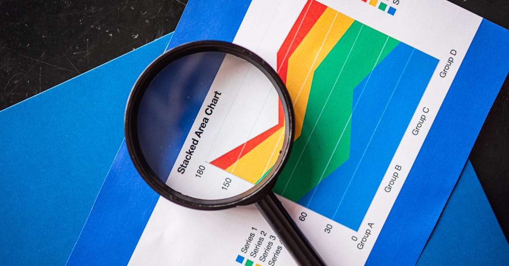

L'IA Redéfinit le Terrain de Jeu des Short Sellers Traditionnels
Dans le monde effervescent de la finance moderne, l'intelligence artificielle n'est plus une simple innovation ; elle est devenue une force transformatrice, remodelant chaque aspect des marchés. Cette révolution technologique s'étend jusqu'aux recoins les plus stratégiques, défiant même les acteurs les plus aguerris, comme les short sellers. Récemment, lors de l'édition Future Proof de « Masters in Business », Barry Ritholtz a plongé au cœur de cette tension avec Carson Block, le fondateur et PDG de Muddy Waters Capital, une figure emblématique connue pour ses enquêtes approfondies et ses paris audacieux contre des entreprises jugées surévaluées ou frauduleuses.
👉 À lire : L'IA : une révolution économique sans précédent ?
Le débat central portait sur la pertinence des analyses fondamentales face à l'omniprésence des indicateurs techniques, d'autant plus que l'IA excelle dans l'identification rapide de schémas et la gestion de flux de données massifs. Carson Block, un fervent défenseur de l'analyse fondamentale – la plongée méticuleuse dans les bilans, les rapports de revenus et la gouvernance d'entreprise – se retrouve à la croisée des chemins. Comment un investisseur qui mise sur la découverte de vérités cachées peut-il rivaliser avec des algorithmes capables de traiter des téraoctets d'informations en quelques millisecondes ? Est-ce la fin d'une ère pour le détective financier solitaire, ou l'IA offre-t-elle de nouvelles opportunités insoupçonnées ?
👉 À lire : Slash : La startup IA qui défie les géants de la finance
Le rôle traditionnel du short selling est de corriger les inefficacités du marché, de démasquer les fraudes et de ramener les valorisations à la réalité. Mais avec l'IA, le marché devient non seulement plus rapide, mais potentiellement plus opaque dans sa complexité, rendant la tâche du short seller encore plus ardue. Les algorithmes peuvent en effet générer une dynamique haussière auto-entretenue, ignorant temporairement les signaux fondamentaux faibles que les humains peinent à repérer. Pour l'épargnant intelligent, cette dynamique soulève une question cruciale : comment notre épargne peut-elle être protégée et optimisée dans un environnement où les règles du jeu changent à une vitesse fulgurante ? La réponse réside peut-être dans des outils qui, comme notre Agent IA, sont conçus pour naviguer cette complexité 24h/24.

Fondamentaux Contre Techniques : Quand l'IA Remet Tout en Question
Le cœur de la philosophie d'investissement de Carson Block, et de Muddy Waters, repose sur une conviction inébranlable dans la primauté des fondamentaux. Pour lui, la valeur intrinsèque d'une entreprise se cache dans ses chiffres, sa gouvernance, et la qualité de sa gestion, et non dans les caprices des graphiques boursiers. Il s'agit d'une approche qui exige du temps, une recherche approfondie, et une capacité à voir au-delà du simple narratif marketing. À l'opposé, l'analyse technique se concentre sur les mouvements de prix et de volume passés pour prédire les tendances futures, une discipline où l'IA démontre une supériorité écrasante.
Les systèmes d'intelligence artificielle excellent dans l'identification de patterns complexes et l'exécution de stratégies de trading à haute fréquence basées sur des indicateurs techniques. Ils peuvent scanner des milliers de titres, détecter des signaux d'achat ou de vente en une fraction de seconde, et agir instantanément, bien avant qu'un analyste humain ne puisse même ouvrir un rapport. Mais la question demeure : l'IA peut-elle réellement appréhender les nuances qualitatives ? Peut-elle sentir l'odeur d'une fraude potentielle dans des pratiques comptables subtilement manipulées, ou évaluer le risque lié à une direction corrompue, comme le ferait Carson Block ?
Un analyste financier, fictivement interrogé, pourrait affirmer :
« L'IA est un calculateur prodigieux, capable de digérer des millions de données en un clin d'œil. Mais un Carson Block est un détective. Il ne se contente pas des chiffres, il cherche l'histoire derrière les chiffres, les motivations humaines, les failles structurelles. C'est une dimension que l'IA, du moins pour l'instant, ne peut pas pleinement reproduire. »Cette distinction est cruciale. Si l'IA excelle dans la détection de signaux techniques et l'optimisation des portefeuilles, elle pourrait manquer les « cygnes noirs » cachés dans les fondamentaux que seul un œil humain aguerri peut débusquer. Pour l'investisseur particulier, notre Agent IA est conçu pour tirer parti des deux mondes, en intégrant à la fois des analyses quantitatives poussées et des indicateurs qualitatifs programmés pour une vision à 360 degrés, offrant ainsi une épargne optimisée et des placements sécurisés.
Le Boom de l'IA : Une Épée à Double Tranchant pour les Marchés Financiers
L'engouement autour de l'intelligence artificielle a propulsé les valorisations de nombreuses entreprises technologiques vers des sommets inégalés, créant un véritable boom boursier. Cependant, comme Carson Block et de nombreux analystes l'ont souligné, chaque euphorie de marché porte en elle le germe de ses propres dangers. Le revers de la médaille de cette effervescence est la formation potentielle de bulles spéculatives et une surévaluation de certains titres, où la réalité fondamentale peine à suivre le rythme des attentes. L'IA, loin de tempérer cette « exubérance irrationnelle », semble parfois l'amplifier.
Les algorithmes de trading, en détectant et en amplifiant les tendances positives, peuvent créer un effet de boule de neige. Lorsque les modèles d'IA identifient des signaux haussiers, ils peuvent déclencher des achats massifs, poussant les prix toujours plus haut, même si les fondamentaux sous-jacents ne justifient pas une telle valorisation. Ce phénomène crée un environnement périlleux pour les short sellers, qui se retrouvent à parier contre un élan technologique puissant et auto-entretenu. La vitesse à laquelle l'IA peut propager une tendance, qu'elle soit haussière ou baissière, est sans précédent.
Un investisseur averti pourrait s'interroger : comment identifier les vrais gagnants de l'IA des entreprises dont le cours est dopé par un simple effet de mode algorithmique ? Les indicateurs traditionnels de surchauffe – des ratios cours/bénéfices exorbitants, des flux de trésorerie négatifs malgré des valorisations astronomiques – sont souvent ignorés dans l'euphorie. « L'IA ne connaît pas la peur, mais elle peut créer la panique plus vite que n'importe quel humain », a souligné un expert en gestion de risques lors d'un récent séminaire. Cette rapidité de propagation, à la fois des gains et des pertes, est l'une des principales préoccupations de Carson Block, qui craint que les marchés ne deviennent trop efficaces pour les bonnes raisons et trop aveugles aux mauvaises.
Identifier les Signes Précurseurs de Panique dans un Marché Dominé par l'IA
Dans ce contexte de boom de l'IA, la capacité à identifier les indicateurs de panique devient plus critique que jamais. Carson Block, avec son expérience inégalée dans la détection de faiblesses cachées, met en garde contre une complaisance excessive. Quels sont ces signaux qui pourraient annoncer un retournement brutal, même dans un marché apparemment invincible, dopé par l'enthousiasme pour l'IA ? Il ne s'agit pas seulement de la chute d'un cours boursier, mais de l'érosion des fondamentaux qui précède souvent le krach.
Les indicateurs clés incluent une augmentation significative de l'endettement des entreprises, une détérioration de la qualité des flux de trésorerie, des marges bénéficiaires sous pression masquées par des artifices comptables, ou des changements soudains dans la gouvernance d'entreprise. Ces signaux, souvent subtils au début, sont les marqueurs que les short sellers comme Block recherchent activement. Cependant, dans un marché où l'IA peut créer une inertie massive autour de certaines valeurs, ces signaux peuvent être ignorés ou noyés dans le bruit.
« Le vrai danger ne vient pas de l'IA elle-même, mais de la confiance aveugle que nous pourrions lui accorder, nous faisant négliger les principes fondamentaux de prudence financière », a récemment déclaré un économiste de renom.Pour l'investisseur particulier, cette situation est complexe. Comment discerner la vraie valeur d'une entreprise au milieu du battage médiatique et des mouvements algorithmiques ? C'est là que des outils comme notre Agent IA peuvent jouer un rôle crucial. En étant programmés pour surveiller non seulement les tendances techniques mais aussi des dizaines d'indicateurs fondamentaux et de risques, ces systèmes peuvent agir comme des sentinelles avancées, alertant l'épargnant face à des signes de faiblesse que l'œil humain ou un simple algorithme de trading ne verrait pas, protégeant ainsi l'épargne et les placements de manière proactive.
L'IA comme Alliée de l'Épargnant Intelligent : Naviguer dans la Complexité
Face aux défis que l'IA pose aux short sellers et à la dynamique des marchés, il est essentiel de reconnaître que cette même technologie peut devenir une alliée puissante pour l'épargnant intelligent. L'ère n'est plus à l'opposition stérile entre l'humain et la machine, mais à une collaboration synergique. L'IA, loin de se contenter de prédire des tendances techniques, est désormais capable d'analyser d'immenses volumes de données fondamentales, d'évaluer les risques, et de personnaliser les stratégies d'investissement à un niveau jamais atteint auparavant.
Imaginez un système capable de surveiller en temps réel les bilans d'entreprises, les rapports sectoriels, les actualités économiques mondiales, et même le sentiment des marchés, pour vous fournir des recommandations éclairées et adaptées à votre profil de risque. C'est précisément la promesse de l'épargne intelligente et de l'investissement automatisé par IA. Notre Agent IA, par exemple, ne se contente pas d'exécuter des ordres ; il optimise votre épargne et vos placements 24h/24, en tenant compte des moindres fluctuations et des signaux faibles que Carson Block et ses équipes de Muddy Waters mettraient des semaines à dénicher.
L'IA peut démocratiser l'accès à des stratégies d'investissement sophistiquées, autrefois réservées aux institutions financières et aux fonds spéculatifs. Elle permet une diversification optimale, une réallocation dynamique des actifs, et une gestion des risques personnalisée, le tout avec une efficacité et une réactivité inégalées. Il ne s'agit pas de remplacer l'intuition humaine, mais de l'augmenter considérablement. Comme un copilote expérimenté, l'IA peut guider l'épargnant à travers les turbulences des marchés, en identifiant à la fois les opportunités de croissance et les menaces potentielles. L'avenir de l'investissement ne réside plus dans la confrontation, mais dans la fusion des meilleures capacités humaines et technologiques, pour un avenir financier plus sûr et plus prospère.

Conclusion : L'Équilibre entre Humain et Machine pour un Avenir Financier Sécurisé
L'affrontement entre les short sellers traditionnels, incarnés par Carson Block et son insistance sur les fondamentaux, et la puissance disruptive de l'intelligence artificielle, est révélateur des profondes mutations que traversent les marchés financiers. Si l'IA pose des défis inédits aux méthodes d'analyse classiques, elle ouvre également des horizons insoupçonnés pour l'investisseur averti. La vitesse de traitement, la capacité à identifier des schémas complexes et l'automatisation des stratégies sont des atouts indéniables de l'IA, mais l'intuition humaine, la capacité à débusquer la fraude et à comprendre les motivations profondes restent des compétences irremplaçables.
Le message clé pour l'épargnant d'aujourd'hui est clair : l'avenir de l'investissement réside dans un équilibre intelligent. Il ne s'agit pas de choisir entre l'humain et la machine, mais d'apprendre à les faire collaborer. Les outils d'IA, comme notre Agent IA, sont conçus pour être ce pont entre l'analyse fondamentale rigoureuse et la rapidité des marchés modernes. Ils permettent d'optimiser l'épargne et les placements 24h/24, en intégrant à la fois les indicateurs quantitatifs et une compréhension approfondie des risques qualitatifs.
En fin de compte, la leçon de Carson Block face à l'IA est que la vigilance reste primordiale. L'IA peut accélérer les bulles comme les corrections, mais elle peut aussi, si elle est bien conçue, devenir un bouclier pour l'épargne. En adoptant des solutions d'investissement automatisées intelligentes, les épargnants peuvent naviguer avec plus de confiance dans ce paysage financier en constante évolution, transformant la menace de l'incertitude en une opportunité de croissance et de sécurité accrues.